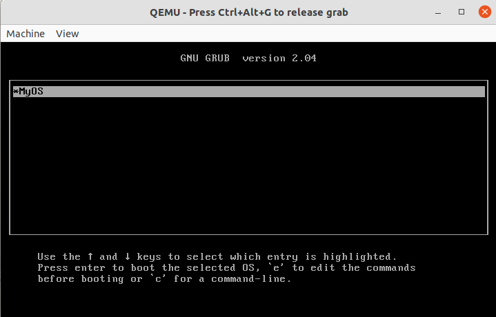

What
What we are trying to achieve
In the last part of the series about keyboard input we have seen that we can read the state of the keyboard by actively polling it. This means the CPU is busy waiting for keyboard input and can’t complete other tasks in the meantime. This is not a good way to handle keyboad input.
As an example if we think of common OSes that show a clock on their task bars, with busy waiting this clock could only be updated when a button is pressed, because only by pressing a button would you let the CPU take control, as it leaves the loop that actively waits for keyboard input, to update the clock on the screen.
A solution to this predicament are interrupts. With interrupts the CPU can be configured to react to certain events by “interrupting” what it is currently doing and jumping to a function we provide.
What to expect
At the end of this part of the series we will have keyboard interrupts set up. With interrupts the CPU does not continiously check the keyboard anymore and is free to do other tasks. This can be seen by repeatidly printing a character on the screen within a loop, while still reacting to keyboard input.

When
Why interrupts so early on
Since we need interrupts sooner or later and since they make developement and error handling a lot easier, most OS developers would suggest adding interrupts early on. They are also unavoidable for any kind of device drivers or in order to, for instance, render graphics as we’re waiting for keyboard input.
Why
Why interrupts
As seen in the last part, we can get around interrupt handling by actively polling, but this suboptimal. For device drivers such as for Floppy Disks that have long delays until they are ready, there is no practical way around interrupts.
Once we have interrupts set up we can handle a wide range of important features:
- Get Interrupts from the keyboard and avoid busy-waiting
- Likewise from the floppy drive controller
- Handle common errors such as divisions by zero, out of bounds, etc
- Handle exceptions
Background
Interrupts are simple conceptionally, but complicated to set up on x86
On microcontrollers such as the Atmega’s setting up interrupts is merely three calls to library functions. What we are attempting to achieve is to
- define a custom function (also called the "interrupt service routing", ISR) to be called when a given interrupt occurs.
- We then configure the CPU, so that it knows what to call for what interrupt.
Now on x86 CPUs setting up interrupts is fairly complicated and online forums are full of developers asking questions on how to debug their interrupt handlers. In contrast to Atmega’s we need to provide the CPU with multiple correctly aligned table in a memory block that we define in C-Code and load into the CPU in assembler.
Steps to set up interrupts
To get interrupts working and to set an interrupt for keyboard input we need to:
- Allocate the "Global Descriptor Table" (GDT) and load it in assembly
- Allocate the "Interrupt Descriptor Table" (IDT) and load it in assembly
- Add functionality to register handler functions for interrupts "Interrupt Service Routine" (ISR).
- Define a keyboard interrupt handler function
- Set the address to that handler function in our IDT
- Enable interrupts in the CPU
Debugging Interrupt Handlers is difficult, because we’re dealing with VMs that lock-up as things go wrong. There are also numerous pitfalls when dealing with sample codes found online:
The osdev-Wiki helps in getting a basic overview [1,2] of what we are trying to achieve. After looking at some other custom OSes on GitHub, two were particularly close to what we’re attemping to achieve here: Interrupt handling on i686-elf compiler with NASM, compilable on Linux that is kept as simple as possible [3,4]. I used both of them and the osdev tutorials and wiki [5] to build the solution in the following. A detailed description on GDT can be found here [6].
How
The Assembly Boot code
The code comes in two parts: the assembly and the C-code. The GDT and IDT’s are very similar in structure.
First we need the assembly code for our GDT and IDT. It will allocate the interrupt handling routines and allow us to call “gdt_flush” and “idt_load” from C. Inside of the “irq_common_stub” and “isr_common_stub” are calls to our C-Code we will later add, the “irq_handler” and “isr_handler”.
Take not of the “lgdt” and “lidt”, where the “l” stands for “load”, they are used to “load” the gdt and idt tables into the CPU.
boot.asm
bits 32
section .text
align 4
dd 0x1BADB002
dd 0x00
dd - (0x1BADB002+0x00)
global start
extern kernel_main
start:
sti
mov esp,0x4000
sti ; needed twice
call kernel_main
cli
hlt
.Lhang:
jmp .Lhang
global gdt_flush
extern gp
gdt_flush:
lgdt [gp]
mov ax, 0x10
mov ds, eax
mov es, eax
mov fs, eax
mov gs, eax
mov ss, eax
jmp 0x08:flush2
flush2:
ret
global idt_load
extern idtp
idt_load:
lidt [idtp]
ret
%include "../isr.asm"
%include "../irq.asm"The Assembly ISR code
I’ve separated the code for the isr’s and irq’s to includes, because they are fairly long. Both isr.asm and isq.asm are very similar. This is because they use the same type of GDT table. Their purpose differs: one is for handling processor errors while the other is for handling handware interrupts. Die to the similarities in structure we could use NASM macros to automatically generate the isr and irq handlers, but that makes the code a lot less readable.
For the ISR’s let’s create isr.asm.
isr.asm (new file)
global isr0
global isr1
global isr2
global isr3
global isr4
global isr5
global isr6
global isr7
global isr8
global isr9
global isr10
global isr11
global isr12
global isr13
global isr14
global isr15
global isr16
global isr17
global isr18
global isr19
global isr20
global isr21
global isr22
global isr23
global isr24
global isr25
global isr26
global isr27
global isr28
global isr29
global isr30
global isr31
; 0: Divide By Zero Exception
isr0:
cli
push byte 0
push byte 0
jmp isr_common_stub
; 1: Debug Exception
isr1:
cli
push byte 0
push byte 1
jmp isr_common_stub
; 2: Non Maskable Interrupt Exception
isr2:
cli
push byte 0
push byte 2
jmp isr_common_stub
; 3: Int 3 Exception
isr3:
cli
push byte 0
push byte 3
jmp isr_common_stub
; 4: INTO Exception
isr4:
cli
push byte 0
push byte 4
jmp isr_common_stub
; 5: Out of Bounds Exception
isr5:
cli
push byte 0
push byte 5
jmp isr_common_stub
; 6: Invalid Opcode Exception
isr6:
cli
push byte 0
push byte 6
jmp isr_common_stub
; 7: Coprocessor Not Available Exception
isr7:
cli
push byte 0
push byte 7
jmp isr_common_stub
; 8: Double Fault Exception (With Error Code!)
isr8:
cli
push byte 8
jmp isr_common_stub
; 9: Coprocessor Segment Overrun Exception
isr9:
cli
push byte 0
push byte 9
jmp isr_common_stub
; 10: Bad TSS Exception (With Error Code!)
isr10:
cli
push byte 10
jmp isr_common_stub
; 11: Segment Not Present Exception (With Error Code!)
isr11:
cli
push byte 11
jmp isr_common_stub
; 12: Stack Fault Exception (With Error Code!)
isr12:
cli
push byte 12
jmp isr_common_stub
; 13: General Protection Fault Exception (With Error Code!)
isr13:
cli
push byte 13
jmp isr_common_stub
; 14: Page Fault Exception (With Error Code!)
isr14:
cli
push byte 14
jmp isr_common_stub
; 15: Reserved Exception
isr15:
cli
push byte 0
push byte 15
jmp isr_common_stub
; 16: Floating Point Exception
isr16:
cli
push byte 0
push byte 16
jmp isr_common_stub
; 17: Alignment Check Exception
isr17:
cli
push byte 0
push byte 17
jmp isr_common_stub
; 18: Machine Check Exception
isr18:
cli
push byte 0
push byte 18
jmp isr_common_stub
; 19: Reserved
isr19:
cli
push byte 0
push byte 19
jmp isr_common_stub
; 20: Reserved
isr20:
cli
push byte 0
push byte 20
jmp isr_common_stub
; 21: Reserved
isr21:
cli
push byte 0
push byte 21
jmp isr_common_stub
; 22: Reserved
isr22:
cli
push byte 0
push byte 22
jmp isr_common_stub
; 23: Reserved
isr23:
cli
push byte 0
push byte 23
jmp isr_common_stub
; 24: Reserved
isr24:
cli
push byte 0
push byte 24
jmp isr_common_stub
; 25: Reserved
isr25:
cli
push byte 0
push byte 25
jmp isr_common_stub
; 26: Reserved
isr26:
cli
push byte 0
push byte 26
jmp isr_common_stub
; 27: Reserved
isr27:
cli
push byte 0
push byte 27
jmp isr_common_stub
; 28: Reserved
isr28:
cli
push byte 0
push byte 28
jmp isr_common_stub
; 29: Reserved
isr29:
cli
push byte 0
push byte 29
jmp isr_common_stub
; 30: Reserved
isr30:
cli
push byte 0
push byte 30
jmp isr_common_stub
; 31: Reserved
isr31:
cli
push byte 0
push byte 31
jmp isr_common_stub
extern isr_handler
isr_common_stub:
pusha
push ds
push es
push fs
push gs
mov ax, 0x10
mov ds, ax
mov es, ax
mov fs, ax
mov gs, ax
mov eax, esp
push eax
mov eax, isr_handler
call eax
pop eax
pop gs
pop fs
pop es
pop ds
popa
add esp, 8
iretThe Assembly IRQ code
And for the IRQ’s irq.asm.
irq.asm (new file)
global irq0
global irq1
global irq2
global irq3
global irq4
global irq5
global irq6
global irq7
global irq8
global irq9
global irq10
global irq11
global irq12
global irq13
global irq14
global irq15
; 32: IRQ0
irq0:
cli
push byte 0
push byte 32
jmp irq_common_stub
; 33: IRQ1
irq1:
cli
push byte 0
push byte 33
jmp irq_common_stub
; 34: IRQ2
irq2:
cli
push byte 0
push byte 34
jmp irq_common_stub
; 35: IRQ3
irq3:
cli
push byte 0
push byte 35
jmp irq_common_stub
; 36: IRQ4
irq4:
cli
push byte 0
push byte 36
jmp irq_common_stub
; 37: IRQ5
irq5:
cli
push byte 0
push byte 37
jmp irq_common_stub
; 38: IRQ6
irq6:
cli
push byte 0
push byte 38
jmp irq_common_stub
; 39: IRQ7
irq7:
cli
push byte 0
push byte 39
jmp irq_common_stub
; 40: IRQ8
irq8:
cli
push byte 0
push byte 40
jmp irq_common_stub
; 41: IRQ9
irq9:
cli
push byte 0
push byte 41
jmp irq_common_stub
; 42: IRQ10
irq10:
cli
push byte 0
push byte 42
jmp irq_common_stub
; 43: IRQ11
irq11:
cli
push byte 0
push byte 43
jmp irq_common_stub
; 44: IRQ12
irq12:
cli
push byte 0
push byte 44
jmp irq_common_stub
; 45: IRQ13
irq13:
cli
push byte 0
push byte 45
jmp irq_common_stub
; 46: IRQ14
irq14:
cli
push byte 0
push byte 46
jmp irq_common_stub
; 47: IRQ15
irq15:
cli
push byte 0
push byte 47
jmp irq_common_stub
extern irq_handler
irq_common_stub:
pusha
push ds
push es
push fs
push gs
mov ax, 0x10
mov ds, ax
mov es, ax
mov fs, ax
mov gs, ax
mov eax, esp
push eax
mov eax, irq_handler
call eax
pop eax
pop gs
pop fs
pop es
pop ds
popa
add esp, 8
iretThe C-Code for the GDT
So at this point we have the Assembler-Code set up. Next we will build the code that can allocate the required structures in C, call the assembly load functions to load them into the CPU and the C-Functions that get called when an interrupt occurs.
For this we need our “General Descriptor Table” (GDT).
gdt.h (new file)
#pragma once
#include "common.h"
struct gdt_entry {
uint16_t limit_low;
uint16_t base_low;
uint8_t base_middle;
uint8_t access;
uint8_t granularity;
uint8_t base_high;
}__attribute__((packed));
struct gdt_ptr {
uint16_t limit;
struct gdt_entry *base;
}__attribute__((packed));
extern void gdt_flush();
struct gdt_entry gdt[3];
struct gdt_ptr gp;
void gdt_set_gate(uint32_t num, uint32_t base, uint32_t limit, uint8_t access, uint8_t gran) {
gdt[num].base_low = (base & 0xFFFF);
gdt[num].base_middle = (base >> 16) & 0xFF;
gdt[num].base_high = (base >> 24) & 0xFF;
gdt[num].limit_low = (limit & 0xFFFF);
gdt[num].granularity = (limit >> 16) & 0x0F;
gdt[num].granularity |= (gran & 0xF0);
gdt[num].access = access;
}
void gdt_install() {
gp.limit = (sizeof(struct gdt_entry) * 3) - 1;
gp.base = gdt;
gdt_set_gate(0, 0, 0, 0, 0);
gdt_set_gate(1, 0, 0xFFFFFFFF, 0x9A, 0xCF);
gdt_set_gate(2, 0, 0xFFFFFFFF, 0x92, 0xCF);
gdt_flush(&gp);
}The C-Code for the IDT
The “Interrupt Descriptor Tables” (IDT)
idt.h (new file)
#pragma once
#include "common.h"
struct idt_entry {
uint16_t base_low;
uint16_t selector;
uint8_t zero;
uint8_t flags;
uint16_t base_high;
}__attribute__((packed));
struct idt_ptr {
uint16_t limit;
struct idt_entry *base;
}__attribute__((packed));
extern void idt_load(struct idt_ptr *);
struct idt_entry idt[256];
struct idt_ptr idtp;
void idt_set_gate(uint8_t num, uint32_t base, uint16_t sel, uint8_t flags) {
idt[num].base_low = (base & 0xFFFF);
idt[num].base_high = (base >> 16) & 0xFFFF;
idt[num].selector = sel;
idt[num].zero = 0;
idt[num].flags = flags;
}
void idt_install() {
idtp.limit = (sizeof(struct idt_entry) * 256) - 1;
idtp.base = idt;
memset((uint8_t *)idt, sizeof(struct idt_entry) * 256, 0);
idt_load(&idtp);
}The C-Code for the Interrupt Handlers
And our handler functions, so-called “Interrupt Service Routines” (ISRs).
isrs.h (new file)
#pragma once
extern void isr0();
extern void isr1();
extern void isr2();
extern void isr3();
extern void isr4();
extern void isr5();
extern void isr6();
extern void isr7();
extern void isr8();
extern void isr9();
extern void isr10();
extern void isr11();
extern void isr12();
extern void isr13();
extern void isr14();
extern void isr15();
extern void isr16();
extern void isr17();
extern void isr18();
extern void isr19();
extern void isr20();
extern void isr21();
extern void isr22();
extern void isr23();
extern void isr24();
extern void isr25();
extern void isr26();
extern void isr27();
extern void isr28();
extern void isr29();
extern void isr30();
extern void isr31();
extern void irq0();
extern void irq1();
extern void irq2();
extern void irq3();
extern void irq4();
extern void irq5();
extern void irq6();
extern void irq7();
extern void irq8();
extern void irq9();
extern void irq10();
extern void irq11();
extern void irq12();
extern void irq13();
extern void irq14();
extern void irq15();
typedef void (*isr)(struct regs *);
void isrs_install() {
outportb(0x20, 0x11);
outportb(0xA0, 0x11);
outportb(0x21, 0x20);
outportb(0xA1, 0x28);
outportb(0x21, 0x04);
outportb(0xA1, 0x02);
outportb(0x21, 0x01);
outportb(0xA1, 0x01);
outportb(0x21, 0x00);
outportb(0xA1, 0x00);
idt_set_gate(0, (uint32_t)isr0, 0x08, 0x8E);
idt_set_gate(1, (uint32_t)isr1, 0x08, 0x8E);
idt_set_gate(2, (uint32_t)isr2, 0x08, 0x8E);
idt_set_gate(3, (uint32_t)isr3, 0x08, 0x8E);
idt_set_gate(4, (uint32_t)isr4, 0x08, 0x8E);
idt_set_gate(5, (uint32_t)isr5, 0x08, 0x8E);
idt_set_gate(6, (uint32_t)isr6, 0x08, 0x8E);
idt_set_gate(7, (uint32_t)isr7, 0x08, 0x8E);
idt_set_gate(8, (uint32_t)isr8, 0x08, 0x8E);
idt_set_gate(9, (uint32_t)isr9, 0x08, 0x8E);
idt_set_gate(10, (uint32_t)isr10, 0x08, 0x8E);
idt_set_gate(11, (uint32_t)isr11, 0x08, 0x8E);
idt_set_gate(12, (uint32_t)isr12, 0x08, 0x8E);
idt_set_gate(13, (uint32_t)isr13, 0x08, 0x8E);
idt_set_gate(14, (uint32_t)isr14, 0x08, 0x8E);
idt_set_gate(15, (uint32_t)isr15, 0x08, 0x8E);
idt_set_gate(16, (uint32_t)isr16, 0x08, 0x8E);
idt_set_gate(17, (uint32_t)isr17, 0x08, 0x8E);
idt_set_gate(18, (uint32_t)isr18, 0x08, 0x8E);
idt_set_gate(19, (uint32_t)isr19, 0x08, 0x8E);
idt_set_gate(20, (uint32_t)isr20, 0x08, 0x8E);
idt_set_gate(21, (uint32_t)isr21, 0x08, 0x8E);
idt_set_gate(22, (uint32_t)isr22, 0x08, 0x8E);
idt_set_gate(23, (uint32_t)isr23, 0x08, 0x8E);
idt_set_gate(24, (uint32_t)isr24, 0x08, 0x8E);
idt_set_gate(25, (uint32_t)isr25, 0x08, 0x8E);
idt_set_gate(26, (uint32_t)isr26, 0x08, 0x8E);
idt_set_gate(27, (uint32_t)isr27, 0x08, 0x8E);
idt_set_gate(28, (uint32_t)isr28, 0x08, 0x8E);
idt_set_gate(29, (uint32_t)isr29, 0x08, 0x8E);
idt_set_gate(30, (uint32_t)isr30, 0x08, 0x8E);
idt_set_gate(31, (uint32_t)isr31, 0x08, 0x8E);
idt_set_gate(32, (uint32_t)irq0, 0x08, 0x8E);
idt_set_gate(33, (uint32_t)irq1, 0x08, 0x8E);
idt_set_gate(34, (uint32_t)irq2, 0x08, 0x8E);
idt_set_gate(35, (uint32_t)irq3, 0x08, 0x8E);
idt_set_gate(36, (uint32_t)irq4, 0x08, 0x8E);
idt_set_gate(37, (uint32_t)irq5, 0x08, 0x8E);
idt_set_gate(38, (uint32_t)irq6, 0x08, 0x8E);
idt_set_gate(39, (uint32_t)irq7, 0x08, 0x8E);
idt_set_gate(40, (uint32_t)irq8, 0x08, 0x8E);
idt_set_gate(41, (uint32_t)irq9, 0x08, 0x8E);
idt_set_gate(42, (uint32_t)irq10, 0x08, 0x8E);
idt_set_gate(43, (uint32_t)irq11, 0x08, 0x8E);
idt_set_gate(44, (uint32_t)irq12, 0x08, 0x8E);
idt_set_gate(45, (uint32_t)irq13, 0x08, 0x8E);
idt_set_gate(46, (uint32_t)irq14, 0x08, 0x8E);
idt_set_gate(47, (uint32_t)irq15, 0x08, 0x8E);
}
isr interrupt_handlers[256];
const char *exception_messages[] = {
"Division By Zero",
"Debug",
"Non Maskable Interrupt",
"Breakpoint",
"Into Detected Overflow",
"Out of Bounds",
"Invalid Opcode",
"No Coprocessor",
"Double Fault",
"Coprocessor Segment Overrun",
"Bad TSS",
"Segment Not Present",
"Stack Fault",
"General Protection Fault",
"Page Fault",
"Unknown Interrupt",
"Coprocessor Fault",
"Alignment Check (486+)",
"Machine Check (Pentium/586+)",
"Reserved",
"Reserved",
"Reserved",
"Reserved",
"Reserved",
"Reserved",
"Reserved",
"Reserved",
"Reserved",
"Reserved",
"Reserved",
"Reserved",
"Reserved"
};
void isr_handler(struct regs *r) {
if (interrupt_handlers[r->int_no]) {
isr handler = interrupt_handlers[r->int_no];
handler(r);
}
else if (r->int_no < 32) {
terminal_putchar('\n');
terminal_writestring(exception_messages[r->int_no]);
terminal_writestring(" Interrupt received!");
}
}
void irq_handler(struct regs *r) {
if (r->int_no >= 40) {
outportb(0xA0, 0x20);
}
outportb(0x20, 0x20);
if (interrupt_handlers[r->int_no]) {
isr handler = interrupt_handlers[r->int_no];
handler(r);
}
}
void register_interrupt_handler(uint8_t n, isr handler) {
interrupt_handlers[n] = handler;
}One last bit
I’ve moved the inportb/outportb/delay functions to a common.h as we’re now using them from the keyboard and interrupts.
common.h (new)
#pragma once
#include <stdbool.h>
#include <stddef.h>
#include <stdint.h>
uint8_t *memset(uint8_t *dest, size_t size, uint8_t val) {
for (size_t i = 0; i < size; i++) {
dest[i] = val;
}
return dest;
}
struct regs {
uint32_t gs, fs, es, ds;
uint32_t edi, esi, ebp, esp, ebx, edx, ecx, eax;
uint32_t int_no, err_code;
uint32_t eip, cs, eflags, useresp, ss;
}__attribute__((packed));
static inline void outportb(uint16_t port, uint8_t val) {
asm volatile ("outb %0, %1" : : "a"(val), "Nd"(port));
}
static inline uint8_t inportb(uint16_t port) {
uint8_t ret;
asm volatile ("inb %1, %0" : "=a"(ret) : "Nd"(port));
return ret;
}Include and Build
Now we can include all our headers in kernel.c
kernel.c (modify)
#include "common.h"
#include "gdt.h"
#include "idt.h"
#include "isrs.h"Modify the line for the assembler of our build script to include the parent directory by adding “-i ../” for the “%include” statements.
${AS} -felf32 -i ../ ../boot.asm -o boot.o A Keyboard interrupt
With all of the above we can now finally register an interrupt for our keyboard. For this, inside kernel.c, setup a handler function for the keyboard interrupt.
void cb_keyboardInterrupt(struct regs *r) {
terminal_writestring("KEY");
}and modify our kernel_main initialize and register it with
register_interrupt_handler(IRQ(1), &cb_keyboardInterrupt);We can now adapt our code from the last part of the series to print “.” on the screen continiously and still react to key presses.
#define IRQ(x) x+32
void kernel_main() {
gdt_install();
idt_install();
isrs_install();
terminal_initialize();
register_interrupt_handler(IRQ(1), &cb_keyboardInterrupt);
terminal_writestring("Hello, kernel World!\n");
keyboardActivePolling_init();
while(true) {
uint8_t scancode = 0;
scancode = keyboardActivePolling_getScancode();
delay();
terminal_putchar('.');
}
}The “1” in “IRQ(1)” is what specifies that we’re interested in interrupts from the keyboard. For the Floppy Disk Controller we would use “IRQ(6)”, see [7].
See the video above for the result.
We could of course easily request the scancode from the keyboard within the “cb_keyboardInterrupt()” interrupt callback by calling “keyboardActivePolling_getScancode()”. We could then convert it to ASCII and print it on the screen as seen in the keyboard by polling part of the series.
Progress
With interrupts working and the keyboard interrupt, we can now focus on loading and saving data to disk. The easiest approach to getting functional disk input/output is to write a small floppy disk driver as seen in the next part of the series. Interrupts are useful, because we need to react to the drive changing state.
1] https://wiki.osdev.org/Interrupts 2] https://wiki.osdev.org/Global_Descriptor_Table 3] https://github.com/deepgovind/MyDOS 4] https://github.com/Jumhyn/JumOS 5] https://wiki.osdev.org/Bare_Bones 6] https://wiki.osdev.org/GDT_Tutorial 7] https://wiki.osdev.org/Interrupts#General_IBM-PC_Compatible_Interrupt_Information